Écoulement de l'air
On appelle Écoulement le déplacement de l'air par rapport à un objet. On distingue trois grands types d'écoulement.
-
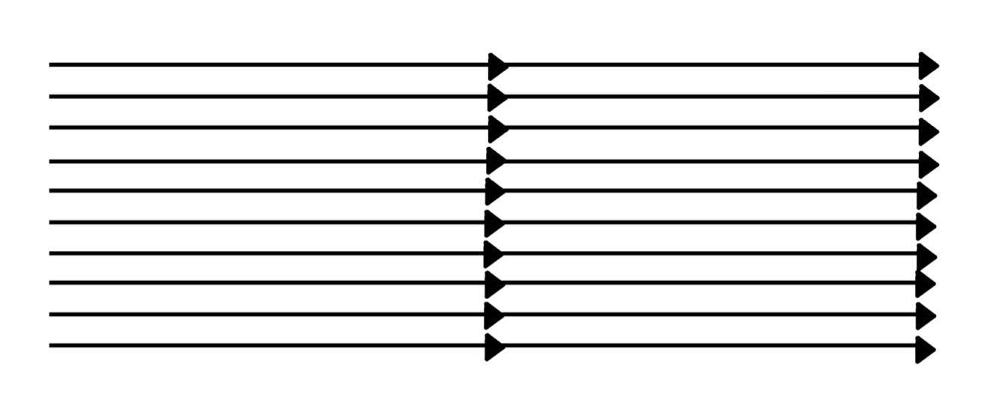
Ecoulement laminaire: Les particules d'air glissent parfaitement les unes sur les autres sans échanges de particules entre elles. Elles suivent un mouvement rectiligne et parallèle.
-
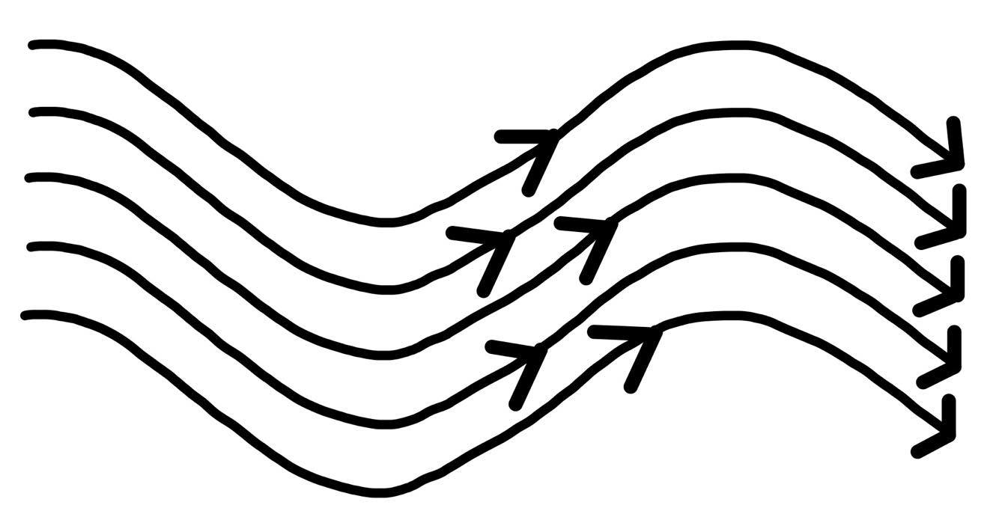
Écoulement turbulent: Les particules d'air ont des trajectoires quasiment parallèles entre elles, mais qui ne sont plus rectilignes, tout en se déplaçant globalement dans le même sens et à la même vitesse
-
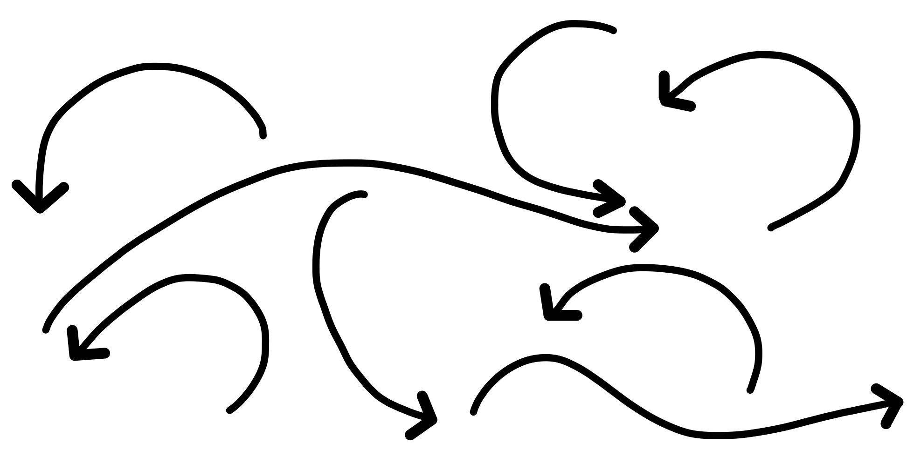
Ecoulement tourbillonnaire: L'écoulement est très désordonné, les particules se mélangent et ne suivent ni une trajectoire rectiligne ni parallèle. Certaines particules peuvent remonter le courant et former ainsi des tourbillons.
Résistance de l'air
-
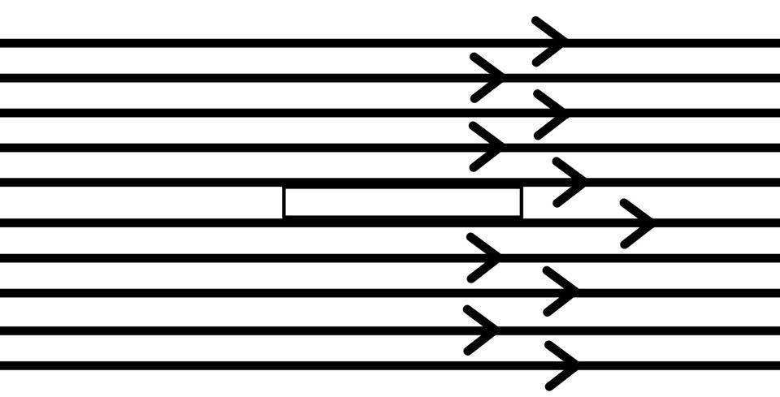
Écoulement de l'air sur un disque plat de faible épaisseur disposé parallèlement aux filets d'air est la forme présentant une résistance minimale simplement due aux frottements de l'air sur la paroi de la plaque. Résistance quasi nulle
-
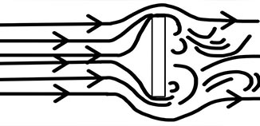
En disposant un disque plat perpendiculairement au flux d'air, nous constatons que l'écoulement de l'air peine à contourner l'obstacle et qu'il se forme une surpression à l'avant et une dépression à l'arrière avec un effet tourbillonnaire. La résistance est alors maximale. Résistance 100%
-
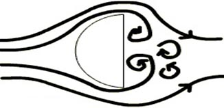
En ajoutant une demi-sphère à l'avant du disque nous constatons que l'air contourne mieux l'objet, la surpression diminue mais il subsiste toujours une dépression et une zone tourbillonnaire à l'arrière. Résistance 75%
-
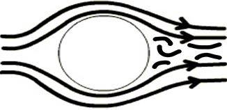
Si l’on complète cette demi-sphère pour former une sphère, l'écoulement est amélioré, la zone tourbillonnaire arrière est alors atténuée, mais pas complètement résorbée.Résistance 50%
-
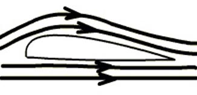
Un corps fuselé "pointu" à l'arrière (bord de fuite), crée une circulation ( Voir Théorie de la circulation ou de Kutta Jukowski ). Résistance 5%
Expression de la résistance de l'air
La résistance de l'air est proportionnelle à la surface présentée perpendiculairement à l'écoulement, au carré de la vitesse de l'écoulement de l’air, à la masse volumique de l'air et à la forme du corps. Nous pouvons donc écrire que :
- 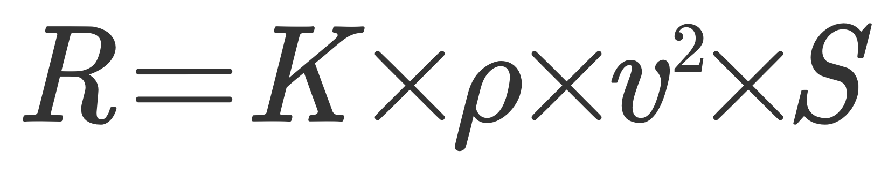
R résistance de l'air exprimée en Newton
K coefficient qui tient compte de la forme du corps et de son état de surface
ρ masse volumique de l'air exprimée en kg.m-3
v vitesse exprimée en m.s-1
S exprimée en m2 surface présentée perpendiculairement à l'écoulement
Théorème de Bernoulli :
Daniel Bernoulli (1700-1782) est un physicien, mathématicien et médecin suisse du XVIIIe siècle. C’est en 1738 qu’il publie son ouvrage Hydrodynamica dans lequel il expose le théorème fondamental de la mécanique des fluides qui porte son nom : le théorème de Bernoulli.
Le théorème de Bernoulli met en évidence le principe de conservation de l'énergie, et plus particulièrement il expose les premiers éléments de la théorie cinétique des gaz. En effet, en partant du principe que tout fluide exerce une pression sur un corps, Bernoulli démontre que la pression d’un fluide diminue lorsque sa vitesse augmente.
L’effet Venturi illustre parfaitement ce théorème :
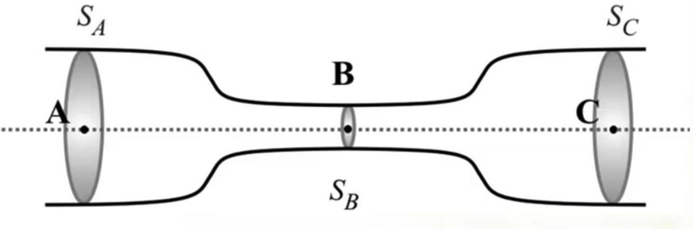On considère ici : l'écoulement d’un fluide compressible dans un tube avec un rétrécissement de celui-ci au point B. On précise que le débit est le même aux sections distinctes Sa, Sb et Sc du tube. Ainsi, les facteurs au cours de l'écoulement de l’air sont la vitesse et la pression.
On observe en effet que la vitesse varie : elle s’accroît lors du rétrécissement du tube au niveau de la section Sb et diminue lors de son élargissement en section Sc. On observe de la même manière que la pression varie de manière opposée à la vitesse : elle diminue au niveau de la section Sb et s'accroît en section Sc. Un fluide passant par un tel tube voit donc sa vitesse augmenter en même temps que sa pression diminue lors du rétrécissement au passage du col.
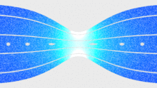On a la relation suivante :
- 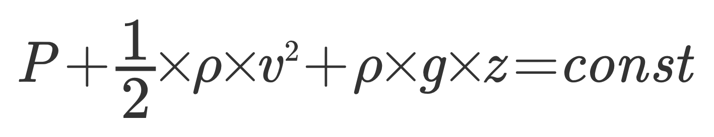
P La pression
ρ La masse volumique
v La vitesse
G L'accélération de la pesanteur (en N/kg ou m/s2)
Z La hauteur (en m)
Or, za = zb car z est constant au cours de l'écoulement, le produit pgz étant une constante on peut simplifier la relation :
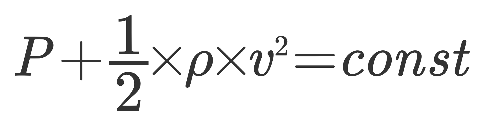Ainsi, lorsque la pression augmente, la vitesse diminue car l'équation ci-dessus est égale à une constante.
Un phénomène permettant le vol:
Ce principe explique le vol des avions car l’aile de l’avion dévie le flux d’air en deux flux distincts, l’un s'écoulant par l’extrados et l’autre par l’intrados. Le profil de l’aile, bombé sur l’extrados, contraint le flux d’air de l’extrados à une compression comme c’est le cas au passage du rétrécissement d’un tube. Ainsi, la vitesse du flux d’air de l’extrados est plus importante que celle de l’intrados. Par conséquent, selon le principe de Bernoulli, la pression sur l’extrados diminue et devient plus faible que la pression exercée sur l’intrados. Cette différence de pression résulte en une force de sustentation permettant à l’avion de s'élever : la portance.
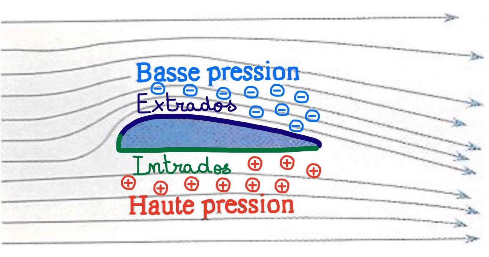Fluide parfait et viscosité :
Définition d'un fluide
L'eau liquide est un fluide, une substance déformable sous l'action d'une force externe qui lui est appliquée. Sa forme est conservée seulement si un corps solide les limite. Les liquides sont généralement considérés comme non compressibles (c'est le cas de l'eau), ils conservent le même volume quelle que soit leur forme. Par opposition, les gaz, comme l’air, tendent à occuper tout l'espace disponible, ils n'ont donc pas de surface propre et sont compressibles
Un fluide non visqueux est dit parfait. En réalité, aucun fluide n’est totalement parfait. Tout fluide possède une certaine viscosité. Le fluide parfait est en fait un modèle, qui permet une représentation simplifiée mais inexacte d’une problématique physique.
La viscosité
La viscosité peut être définie synthétiquement comme la résistance d'un fluide au changement de forme. On constate par exemple que le miel est une substance plus visqueuse que l’eau. Cela est mis en évidence lorsque l’on observe l'écoulement de ces deux liquides : l’eau a bien moins de difficulté à s'écouler que le miel. C’est dû à la viscosité, qui est la tendance d’un fluide à résister à son écoulement. Les liquides ont une viscosité supérieure à celle des gaz car leur espace intermoléculaire est plus faible, leurs molécules sont donc plus rapprochées et des liaisons s'établissent entre elles, ce qui augmente la cohésion de l'ensemble. Par ailleurs, un fluide est dit newtonien s’il conserve la même viscosité quelle que soit la valeur de la contrainte appliquée, ainsi l’air est un fluide non newtonien car celui-ci est compressible.

Un phénomène, l’effet Coanda, illustre la viscosité d’un fluide : Ici, on observe bien que l’eau voit sa trajectoire verticale descendante être modifiée au contact de la cuillère. En effet, cela est dû en partie à la viscosité du fluide, celui-ci subit une déviation et suit la surface de la cuillère avant de s’en détacher.
Ci dessus, la flèche rouge représente le parcours théorique de l'air sans effet Coanda. L'écoulement de l’air sur l’extrados n'épousera alors pas le profil de l’aile comme c’est le cas en réalité.
Théorème de Kutta-Jukowski :
Wilhelm Kutta (1867-1944) et Nikolaï Jukowski (1847-1921): C’est au début du XXe siècle que la Théorie de Kutta-Jukowski aussi appelée théorie de la circulation apparaît. Cette théorie est le fruit du travail de deux aérodynamiciens, Martin Wilhelm Kutta, allemand, et Nikolaï Joukovski, Russe, qui indépendamment aboutissent aux mêmes conclusions.
Paradoxe d’Alembert: Considérons un écoulement à vitesse constante de fluide parfait (voir viscosité) autour d’un cylindre. L’écoulement d’air est alors le suivant :
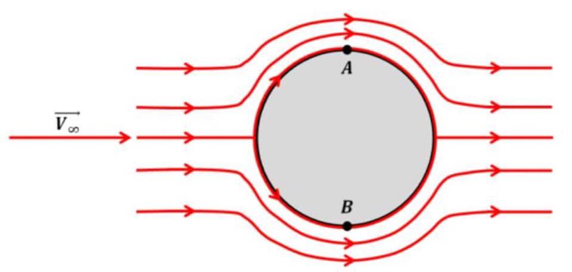On constate : Une certaine symétrie de l’écoulement autour du cylindre, notamment par rapport à la direction de la vitesse. Cette symétrie nous permet de constater que la pression au point A est la même que celle au point B. Les forces de pression des deux côtés du cylindre sont donc identiques, ce qui signifierait qu’il n’y a ni portance ni traînée. Ce résultat diverge, évidemment, de la réalité, on parle de paradoxe d’Alembert. On précise que ce raisonnement est basé sur l’exemple du cylindre car il possède une géométrie simple, mais ce phénomène est valable pour tout objet, profil d’aile inclus.
Théorie de la circulation :
Dans les écoulements réels, des perturbations apparaissent à l’arrière du solide (sillage). L’origine de ces perturbations est la viscosité des fluides réels. Sans viscosité, pas de traînée. C’est grâce aux travaux de W. Kutta et N. Jukowski que le mystère s’est éclairci : il existerait un phénomène autour du profil nommé circulation. La circulation apporterait l’élément manquant pour comprendre comment se développe la portance.
La viscosité du fluide permet son adhérence à l’aile de l’avion, même à vitesse faible et au bord de fuite de l’aile. En réalité, le flux d’air s'écoulant par l’intrados a une pression plus importante que celle sur l’extrados. Par conséquent, le flux d’air de l’intrados aura une tendance à contourner le bord de fuite pour se précipiter sur l’extrados où la pression est plus faible. Au décollage de l’avion, l'air commence donc à contourner le bord de fuite en raison de la faiblesse des forces d'inertie par rapport aux forces de viscosité. Ce rapport de forces s'appelle le nombre de Reynolds (en savoir plus sur le nombre de Reynolds) et il est très faible au démarrage du mouvement.
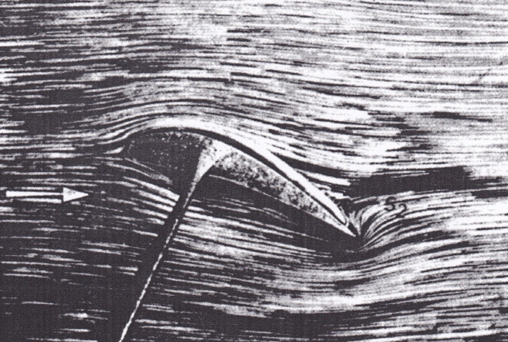Livre CA Marchaj Aero-Hydro of sailing
On constate ci dessus, le contournement du bord de fuite par le flux d’air provenant de l’intrados.
Cependant avec l’augmentation de la vitesse de l’avion, l’inertie prend peu à peu le pas sur ce phénomène de contournement qui devient difficile puis impossible, il se forme alors un tourbillon “initiateur”. Par ailleurs, il existe un second tourbillon centré sur le plan qui se crée en raison de la déflexion de l’air par l’aile. En effet, le flux d’air parcourant l’extrados entraîne l’air avoisinant dans son contournement du profil de l’aile.
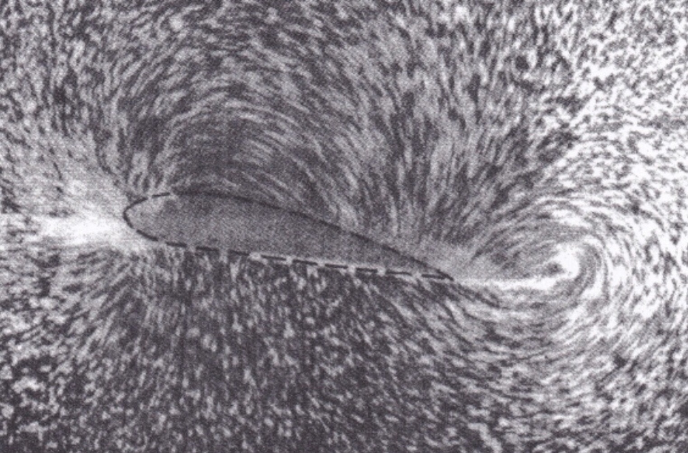Livre CA Marchaj Aero-Hydro of sailing
Ci dessus, on peut observer les deux tourbillons tournant en sens inverse.
Le tourbillon “initiateur” et le tourbillon centré sur le plan tournent dans des sens contraires ce qui permet un équilibre du système. Une fois que l’avion atteint une certaine vitesse, l’équilibrage du système s'opère et le tourbillon “initiateur” se détache du profil ce qui permet la création d’une force de sustentation : la portance.
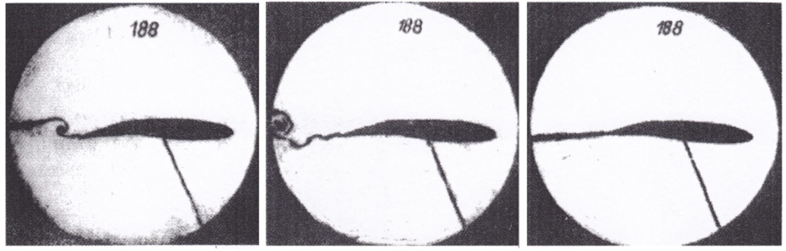Livre CA Marchaj Aero-Hydro of sailing
Sur ces images, on assiste au détachement du profil de l’aile du tourbillon initiateur.
RÉSUMÉ : Une fois qu'un avion atteint une certaine vitesse, les forces tourbillonnaires s'équilibrent. L'équilibrage du système permet alors la stabilisation du flux d'air, il y a alors création d'une portance.